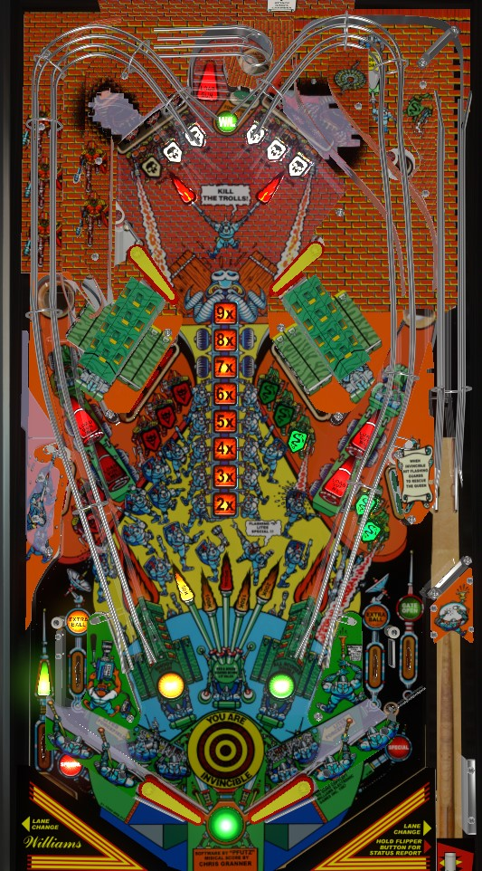

Try to always be playing or advancing toward multiball. One or more locks are always available at the left and right orbit lanes; after 2 balls are locked, the very top center lane starts multiball. At the start of the ball or after any lock, make a precise-power plunge into the hairpin at the top right of the game to score a Tower skill shot worth an increasing award up to 1,000,000 points. In multiball, shoot whichever of the 3 locks is lit to start Invincible; during Invincible, shoot all the flashing Guard standups in the center of the table within the time limit to score the progressive jackpot. Multiple jackpots can be won in each multiball.
The below screenshot of Big Guns' playfield was taken from the VPX recreation by 32assassin.
The skill shot is a precise-power plunge that makes it past the the one-way gate in the very top right of the game, then falls down the first lane labelled 100K Load. This scores the Tower Bonus, worth 100,000 points at first and increasing by 100,000 points each subsequent time the skill shot is made on the same ball. (If you have extra balls, the skill shot value does not reset, but when you move from ball 1 to ball 2 or from ball 2 to ball 3, the value does reset.) The skill shot can be worth as much as 1,000,000 points before it resets back to 100,000. If the right cannon lock is lit, making the skill shot also locks a ball for multiball. After a certain number of made skill shots- usually seems to be about 5- a Tower Special is awarded as well.
Multiball is very easy to repeatedly achieve on Big Guns. Locks 1 and 2 are at the left and right orbit lanes when lit. At least one lock is always available. For the first multiball of a game, both side locks are lit, and they can be made in either order. After that, you need to make lock 1 on the left, then lock 2 on the right, in that order. When both locks have been made, shoot the very top center lane to start multiball- it can be hit from any of the game's 4 flippers, but is slightly easier from the two right flippers. At least one lock is available at all times and you are never more than 3 shots away from starting multiball.
Multiball always starts with 3 balls. The center post between the flippers is raised at the start of multiball until all 3 balls have been kicked out. During multiball, all playfield scoring is doubled with 2 or more balls in play, and one of the three lock lanes will be lit. Put a ball in the lit lock lane to start Invincible. During Invincible, you have 12 seconds of unlimited left kickback, center post, and right out lane gate. It is still possible to drain a ball under a raised flipper with the center post raised, though, and there is no compensation for this. When Invincible starts, the standup targets in the two center 3-banks will flash. Hit all of these targets to unlight them before the Invincible timer runs out to score the Queen's Rescue jackpot. The jackpot starts at 200,000 points, increases during any multiball (by 20,000 points per standup or drop target hit?), maxes out at 3,000,000, carries over across players and games, and resets once collected. If Invincible ends with some standup targets still lit, the game will taunt you with how many were remaining, but when you restart Invincible, you'll need to re-hit all 6 targets again. Invincible can be started, and jackpots can be collected, an infinite number of times within a single multiball. Invincible instantly ends if you return to single ball play while it is running.
Guard standup targets score 5,000 points. Hit a flashing target to light it. Lighting all 10 targets relights the left out lane kickback and the right out lane gate, as well as scoring 10,000 points plus scoring and advancing the value on the lit gunfires in the center of the table. The value starts at 50,000 points at the start of each ball and can be advanced to 100,000, then 150,000, then 200,000, then Special. Collecting a Special resets the completion value to 50,000 points and it must be built up again. If the Guard target special has already been collected on the current ball or is disabled, the value will stay at 200,000 points for the rest of the ball and not reset.
Each of the 3-banks of drop targets in the upper part of the playfield have their own flashing value, which rotates between 50,000, 100,000, and 150,000 points. Hitting a drop target locks in the value of that bank for 7 seconds. To collect the locked-in value, you need to hit the Troll standup target within those 7 seconds- the Troll standup target is located behind the drop target in each bank that is closest to the side of the table. Drop targets reset and the value begins rotating again after 7 seconds pass or after the Troll target is hit. Hitting 3 Trolls over the course of the game lights one of the in lanes for extra ball, which can be moved using flipper lane change.
There is a mini u-turn shot on each side of the upper playfield that loops behind the Troll target and is blocked on one side by a drop target. If you shoot the ball around one of these loops, the opposite side loop will be lit green for a bonus multiplier for about 15 seconds. If the drop targets are out of the way, you can combo these mini-loops back and forth to quickly collect bonus multipliers a few at a time, but the ball moves around quite quickly in this part of the table. Bonus multiplier maxes out at 9x and is never carried from ball to ball. At the start of the game, one of the bonus multipliers in the ladder at the center of the table will be flashing (by default, it's at 5x, but this can be moved with operator settings); the first time you reach the flashing bonus multiplier in a game, the out lanes will be lit alternately for a Special.
Any time the center lane/saucer is made, whether it is to start multiball or not, the ball will be fired in the King's Chamber backbox bagatelle game. The ball rattles down the board and lands in one of the 5 Shield lanes at the bottom. Roll through an unlit Shield lane to light it. Lit lanes can be rotated in either direction using lane change from either flipper. If all 5 Shields are lit, the next King's Chamber shot scores an extra ball no matter where it lands. Lit shields carry over from ball to ball. Multiple extra balls can be won from this feature, and they never get harder. All King's Chamber shots score 20,000 points. If a mechanical fault prevents the King's Chamber from properly firing the bagatelle ball, the game will spot the leftmost shield for you, so if your King's Chamber doesn't work, move the lit lanes so that the leftmost shield is unlit before the game realizes something is wrong.
At the end of each player's final ball, the King's Chamber is fired one more time, with 1 random Shield lane being lit. This time, flipper lane change cannot move the lit lane. If the bagatelle ball goes through the lit lane, the current player is award either 100,000 points or a "last chance" extra ball, depending on the game settings.
Big Guns has a conventional in/out lane setup. In lanes score 5,000 points, and can be lit for extra ball by hitting a certain number of Trolls (default 3). The lit extra ball can be moved with flipper lane change. Also, rolling through either in lane lights the Forcefield target at the top of the game next to the center lock for a few seconds; hitting this target when lit raises the center post for about 10 seconds. In the out lanes, there is an automatic kickback on the left side, and a gate that puts an out lane ball back into the in lane on the right side. When the kickback is on or the gate is open, the out lanes score 10,000 points, but when there is no kickback or gate, the out lanes score 25,000 points. Out lanes can also be lit alternately for Special, moving based on slingshot hits, on the ball where the bonus multiplier reaches the predetermined flashing level for the first time.
There is a center post that completely blocks off the flipper gap as a reward. The flipper gap is raised briefly at the start of multiball, after any in lane -> Forcefield target combo, and during Invincible. It is still possible to drain a ball between a raised flipper and a raised center post.
Bonus is only ever increased 1,000 points at a time. Drop targets, standup targets, and shots to any saucer all seem to advance the bonus, but I do not know the exact formula. Bonus multipliers are scored by shooting the mini-loops in the upper part of the table back and forth repeatedly, somewhat similar to how bonus multipliers are achieved on F-14 Tomcat. Max bonus is 9x 99,000 = 891,000 points. Neither the base bonus nor the bonus multiplier can ever be carried from ball to ball, and there is no mid-ball bonus collect.
The game manual indicates that in competion/novelty play, Special scores 100,000 points. Extra balls can also be set to score if they are disabled, but I do not know the exact value; I would expect 50,000 o 100,000.
The difficulty of Invincible mode can be changed dramatically. The time limit can be set to anywhere from 5 to 99 seconds (default 12), and the number of flashing guard targets that need to be hit to collect the Queen's Rescue jackpot can be anywhere from 2 to 10.
The value for completing all 10 Guard targets in single ball play can be set to carry over from ball to ball; by default, it does not. Also, it can take anywhere from 1 to 99 completions to advance the completion value; the default is 1, and setting this to anything more than 1 or maybe 2 seems especially mean-spirited.
You can be required to light the 5 Shields in the King's Chamber anywhere from 1 to 99 times before you can get an extra ball from the bagatelle. By default, it only takes 1. This feature might be a bit more balanced if it was set to 2 or 3 instead...
The amount of time before drop targets reset and the amount of time that bonus multipliers are lit can both be independently set to anywhere from 4 to 40 seconds. Default is 7 seconds for drop targets and 15 for bonus multipliers.
It can take anywhere from 2 to 30 Troll hits to light extra ball. Default is 3. I believe that only one extra ball per game can be earned from this feature.
The out lane special can be lit at anywhere from 2x to 9x bonus. Default is 5x. If the game is set up to allow this setting to move around automatically based on player performance, it will never go below 5x.